Versão para ler no celular em pé. Toque na foto da tela para ampliar. Na apresentação, cada tela vai aparecendo por cliques.
Tela 1 de 20
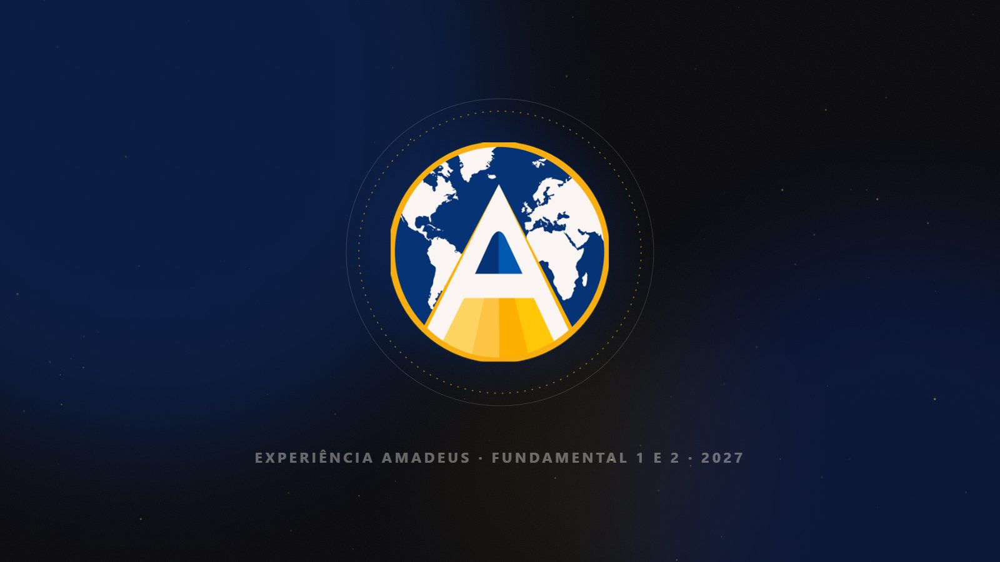
EXPERIÊNCIA AMADEUS · FUNDAMENTAL 1 E 2 · 2027
Tela 2 de 20
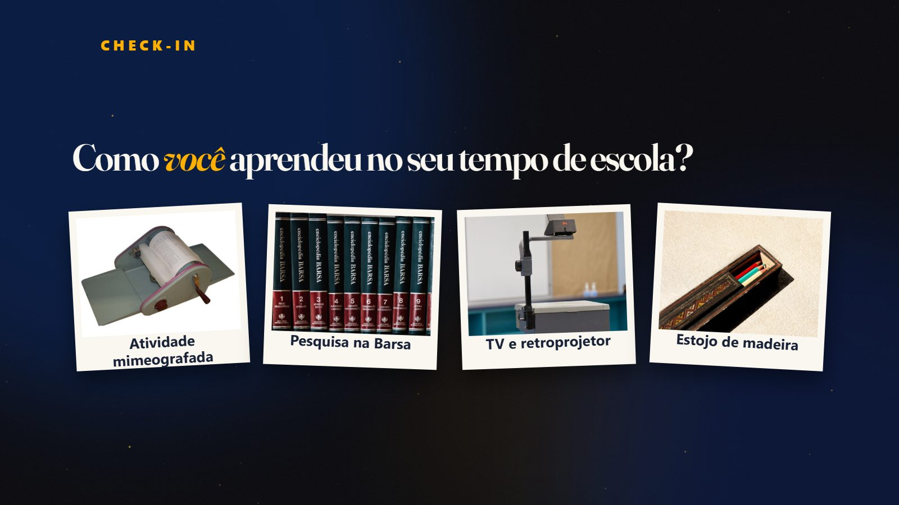
CHECK-IN
Como você aprendeu no seu tempo de escola?
Atividade mimeografada
Pesquisa na Barsa
TV e retroprojetor
Estojo de madeira
Tela 3 de 20
E como o seu filho aprende hoje?
O mundo sempre mudou, mas nunca tão rapidamente.
Tela 4 de 20
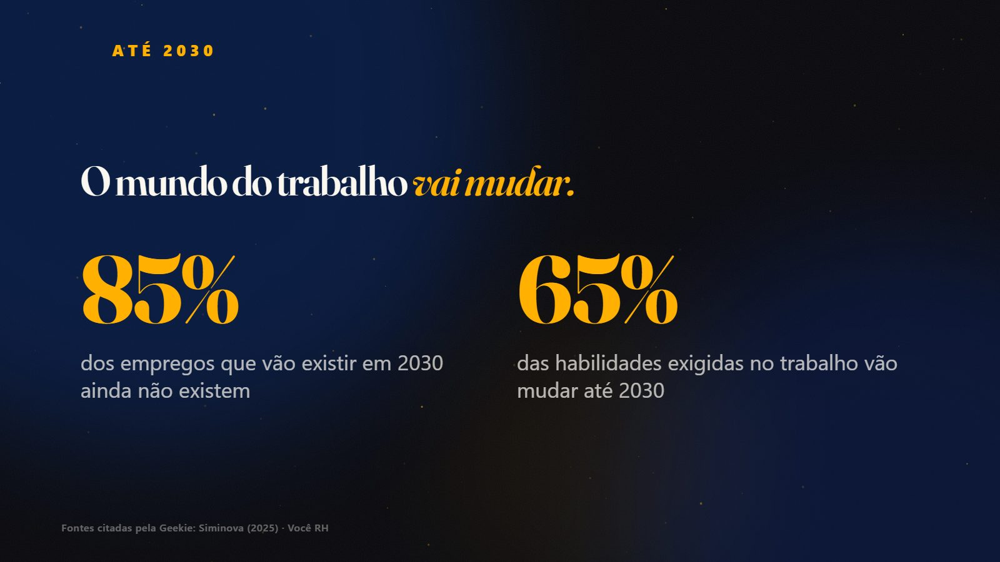
ATÉ 2030
O mundo do trabalho vai mudar.
85% dos empregos que vão existir em 2030 ainda não existem
65% das habilidades exigidas no trabalho vão mudar até 2030
Fontes citadas pela Geekie: Siminova (2025) · Você RH
Tela 5 de 20
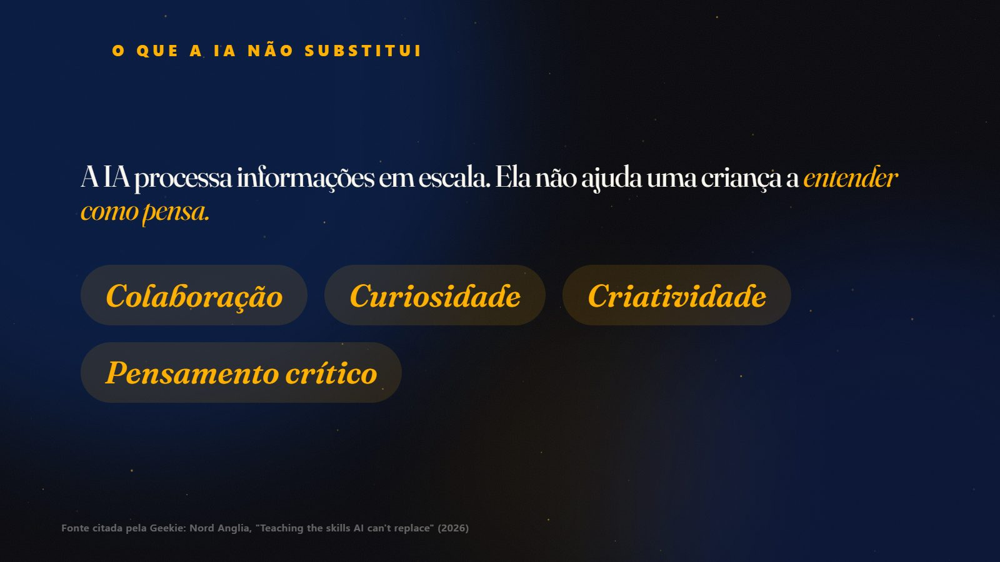
O QUE A IA NÃO SUBSTITUI
A IA processa informações em escala. Ela não ajuda uma criança a entender como pensa.
Colaboração
Curiosidade
Criatividade
Pensamento crítico
Fonte citada pela Geekie: Nord Anglia, "Teaching the skills AI can't replace" (2026)
Tela 6 de 20
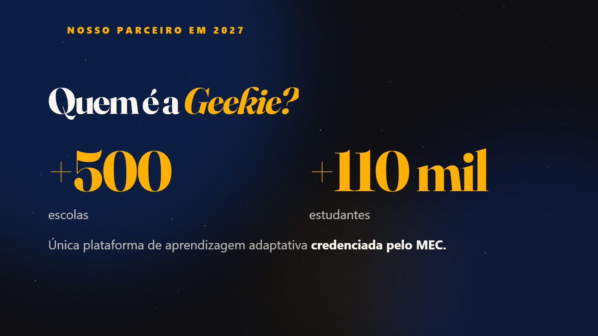
NOSSO PARCEIRO EM 2027
Quem é a Geekie?
+500 escolas
+110 mil estudantes
Única plataforma de aprendizagem adaptativa credenciada pelo MEC.
Tela 7 de 20
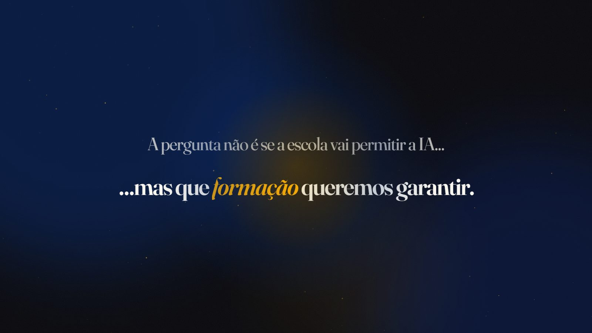
A pergunta não é se a escola vai permitir a IA…
…mas que formação queremos garantir.
Tela 8 de 20
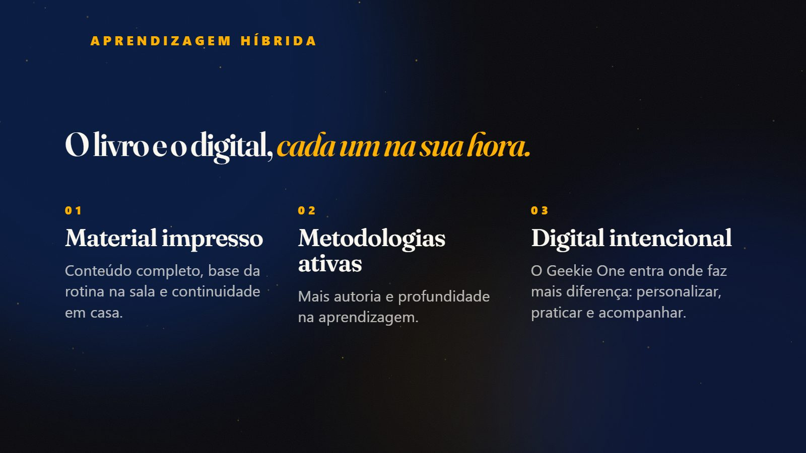
APRENDIZAGEM HÍBRIDA
O livro e o digital, cada um na sua hora.
01 Material impresso Conteúdo completo, base da rotina na sala e continuidade em casa.
02 Metodologias ativas Mais autoria e profundidade na aprendizagem.
03 Digital intencional O Geekie One entra onde faz mais diferença: personalizar, praticar e acompanhar.
Tela 9 de 20
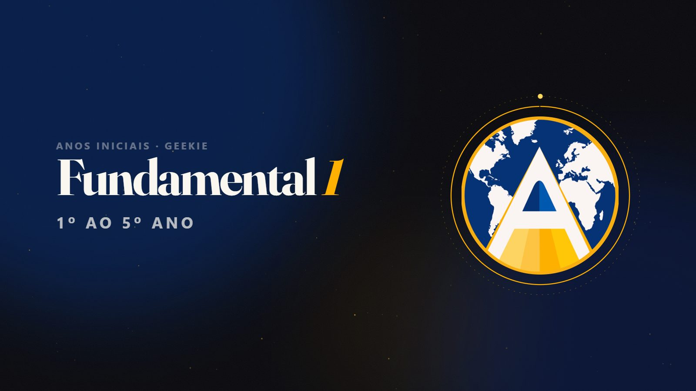
ANOS INICIAIS · GEEKIE
Fundamental 1
1º AO 5º ANO
Tela 10 de 20
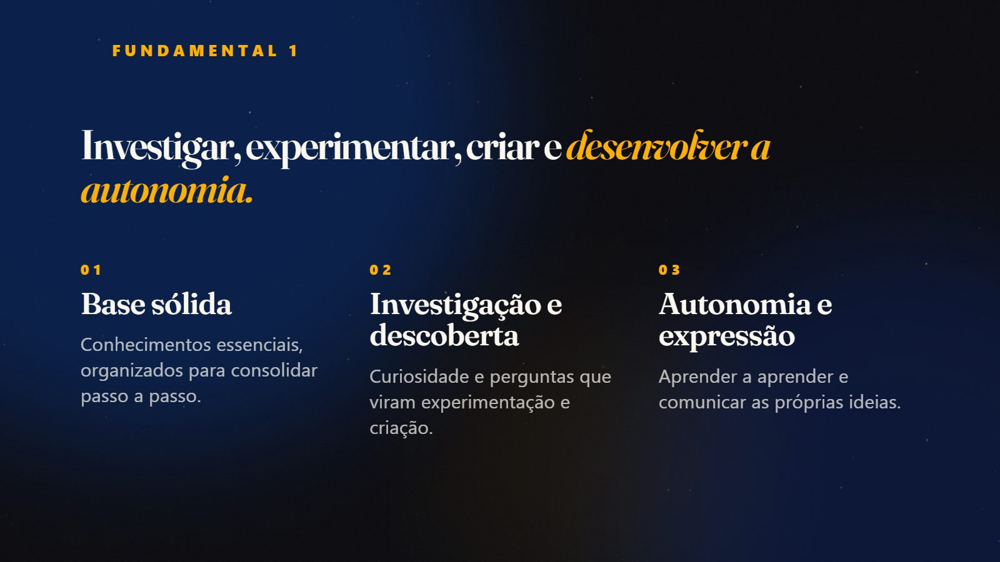
FUNDAMENTAL 1
Investigar, experimentar, criar e desenvolver a autonomia.
01 Base sólida Conhecimentos essenciais, organizados para consolidar passo a passo.
02 Investigação e descoberta Curiosidade e perguntas que viram experimentação e criação.
03 Autonomia e expressão Aprender a aprender e comunicar as próprias ideias.
Tela 11 de 20
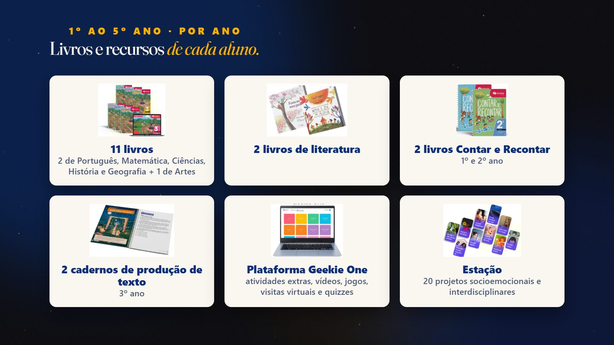
1º AO 5º ANO · POR ANO
Livros e recursos de cada aluno.
11 livros 2 de Português, Matemática, Ciências, História e Geografia + 1 de Artes
2 livros de literatura
2 livros Contar e Recontar 1º e 2º ano
2 cadernos de produção de texto 3º ano
Plataforma Geekie One atividades extras, vídeos, jogos, visitas virtuais e quizzes
Estação 20 projetos socioemocionais e interdisciplinares
Tela 12 de 20
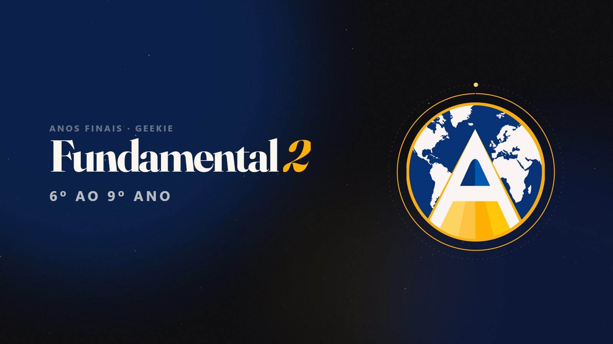
ANOS FINAIS · GEEKIE
Fundamental 2
6º AO 9º ANO
Tela 13 de 20
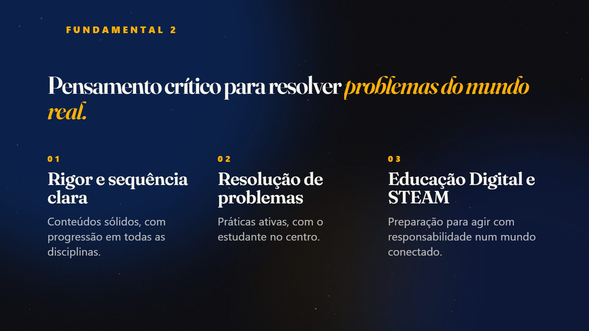
FUNDAMENTAL 2
Pensamento crítico para resolver problemas do mundo real.
01 Rigor e sequência clara Conteúdos sólidos, com progressão em todas as disciplinas.
02 Resolução de problemas Práticas ativas, com o estudante no centro.
03 Educação Digital e STEAM Preparação para agir com responsabilidade num mundo conectado.
Tela 14 de 20
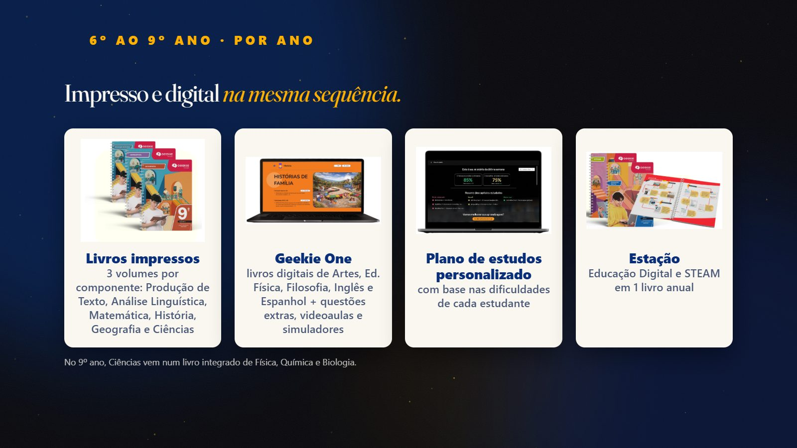
6º AO 9º ANO · POR ANO
Impresso e digital na mesma sequência.
Livros impressos 3 volumes por componente: Produção de Texto, Análise Linguística, Matemática, História, Geografia e Ciências
Geekie One livros digitais de Artes, Ed. Física, Filosofia, Inglês e Espanhol + questões extras, videoaulas e simuladores
Plano de estudos personalizado com base nas dificuldades de cada estudante
Estação Educação Digital e STEAM em 1 livro anual
No 9º ano, Ciências vem num livro integrado de Física, Química e Biologia.
Tela 15 de 20
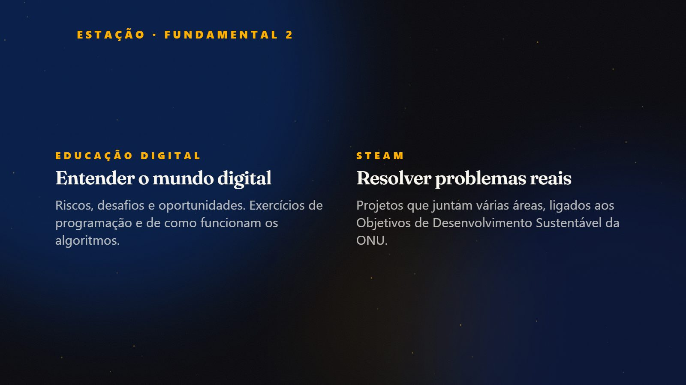
ESTAÇÃO · FUNDAMENTAL 2
EDUCAÇÃO DIGITAL Entender o mundo digital Riscos, desafios e oportunidades. Exercícios de programação e de como funcionam os algoritmos.
STEAM Resolver problemas reais Projetos que juntam várias áreas, ligados aos Objetivos de Desenvolvimento Sustentável da ONU.
Tela 16 de 20
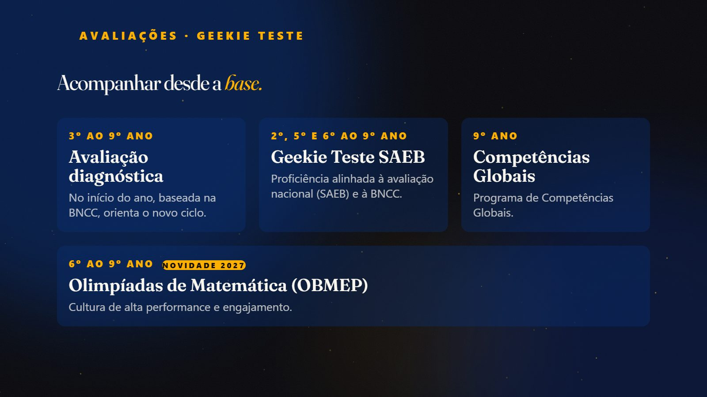
AVALIAÇÕES · GEEKIE TESTE
Acompanhar desde a base.
3º AO 9º ANO Avaliação diagnóstica No início do ano, baseada na BNCC, orienta o novo ciclo.
2º, 5º E 6º AO 9º ANO Geekie Teste SAEB Proficiência alinhada à avaliação nacional (SAEB) e à BNCC.
9º ANO Competências Globais Programa de Competências Globais.
6º AO 9º ANO NOVIDADE 2027 Olimpíadas de Matemática (OBMEP) Cultura de alta performance e engajamento.
Tela 17 de 20
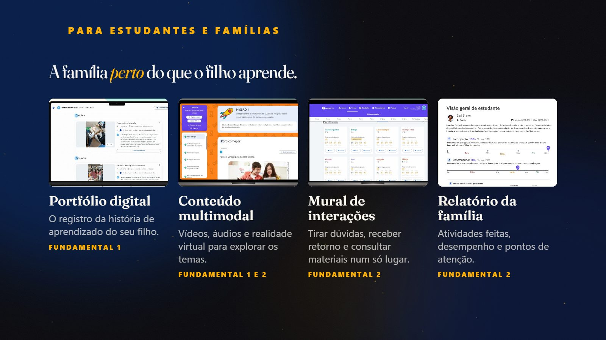
PARA ESTUDANTES E FAMÍLIAS
A família perto do que o filho aprende.
Portfólio digital O registro da história de aprendizado do seu filho. FUNDAMENTAL 1
Conteúdo multimodal Vídeos, áudios e realidade virtual para explorar os temas. FUNDAMENTAL 1 E 2
Mural de interações Tirar dúvidas, receber retorno e consultar materiais num só lugar. FUNDAMENTAL 2
Relatório da família Atividades feitas, desempenho e pontos de atenção. FUNDAMENTAL 2
Tela 18 de 20
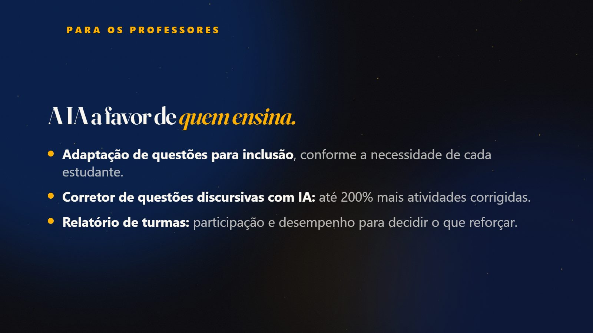
PARA OS PROFESSORES
A IA a favor de quem ensina.
Adaptação de questões para inclusão, conforme a necessidade de cada estudante.
Corretor de questões discursivas com IA: até 200% mais atividades corrigidas.
Relatório de turmas: participação e desempenho para decidir o que reforçar.
Tela 19 de 20
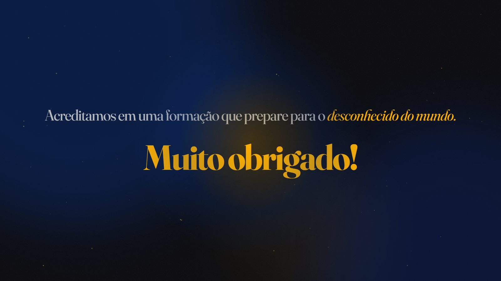
Acreditamos em uma formação que prepare para a descoberta do mundo.
Muito obrigado!
Tela 20 de 20
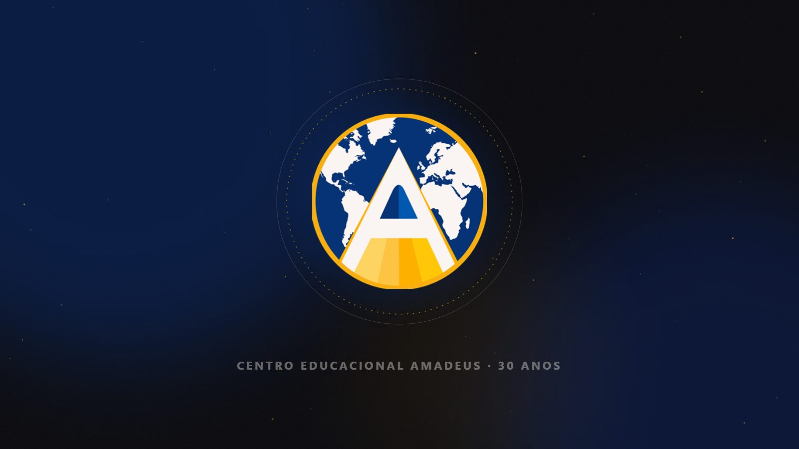
CENTRO EDUCACIONAL AMADEUS · 30 ANOS
Centro Educacional Amadeus · material da Geekie resumido para a Experiência Amadeus (10/10/2026).